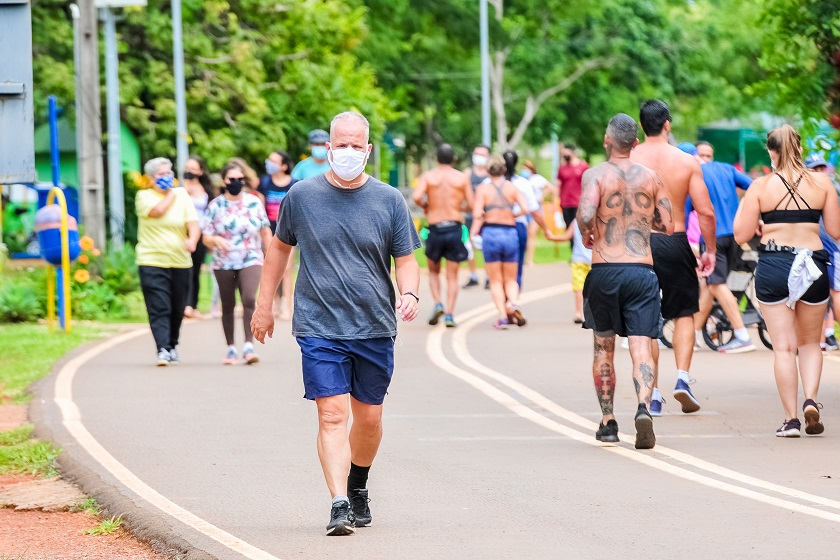

Filmes e séries são muito mais do que um passatempo para mim. São uma paixão que me permite escapar da realidade e me conectar com histórias emocionantes, personagens cativantes e mundos incríveis. Através da tela, posso rir, chorar, pensar, questionar e aprender sobre diversos temas. Filmes e séries são meu refúgio, meu momento de relaxamento e meu portal para a imaginação.
Atividades aeróbicas são aquelas que exigem um esforço contínuo e moderado por um período de tempo. Exemplos incluem caminhada, corrida e natação.
Atividades anaeróbicas envolvem explosões rápidas de força, como levantamento de peso e sprints, que não dependem tanto da respiração contínua.
O esporte tem suas origens desde as civilizações antigas, com atividades como corridas e lutas sendo realizadas em diversas culturas.
No século XX, o esporte se popularizou globalmente, e novas modalidades foram surgindo, como o futebol, basquete e atletismo, com a criação das principais competições internacionais.
Manter-se ativo é essencial para a saúde. Algumas dicas incluem a prática regular de atividades físicas, uma alimentação balanceada e a busca por momentos de lazer ao ar livre.